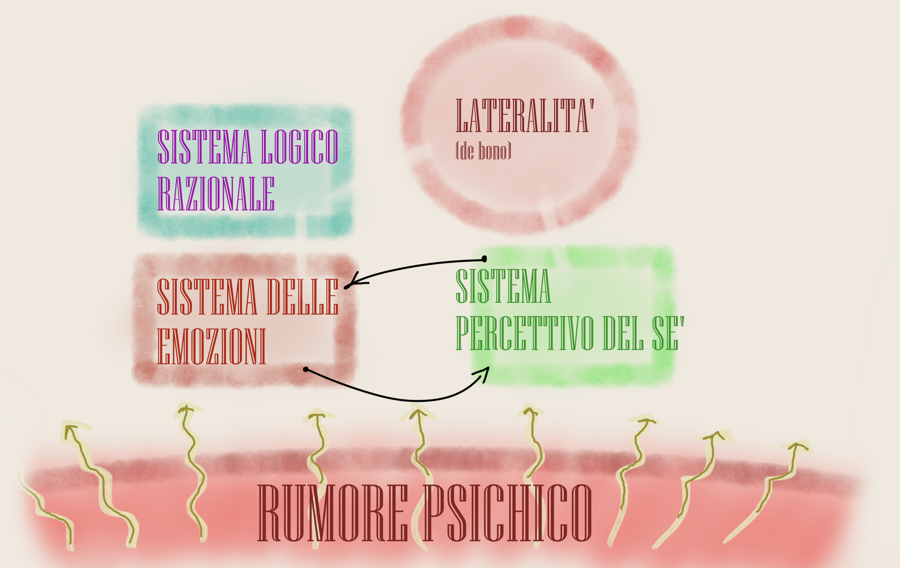

Il Vero, il Falso, l'Indecidibile (2)

Questo il prompt GPT-4o per generare l'immagine (primo tentativo): === Disegna un uomo di 51 anni, con aspetto giovanile e serio, occhiali e leggera barba imbiancata sul mento, intento a studiare Jung e allo stesso tempo a spiegare la divisione tra VERO, FALSO e INDECIDIBILE, rivolto agli studenti di 17 anni in relazione a come usare la matematica, le scienze, la tecnologia e l'ingegneria per migliorare la vita di tutti gli esseri umani. Dividi la scena in un "VERO", un "FALSO", un "INDECIDIBILE" e tutti che contemplano questi tre elementi concettuali. Nell'immagine, il testo deve essere unicamente in italiano. ===
RIFLESSIONI SULLA DIDATTICA DELL'INFORMATICA(come interagire con i ragazzi per insegnare loro l'informatica)
L'approccio scientifico richiede sempre una o più domande a cui si vuole dare una qualche risposta. La prima domanda che ci poniamo è: "(1) Quanto si discosta il pensare artificiale dal pensare naturale se riflettiamo in termini di struttura, modalità di pensiero, modalità di giudizio, modalità di decisione, atteggiamento nei confronti del tempo, consapevolezza del tempo e del non-tempo."
È una domanda molto articolata, intrisa di antefatti, prerequisiti, preconcetti, giudizi. In genere suggerisco di utilizzare un approccio divide et impera, per cui scomponiamo la domanda in elementi atomici (cioè indivisibili) e trattiamo ciascuno con un certo livello di dettaglio. Proviamo poi a raccogliere tutti i risultati e a trarne una sintesi di qualche genere. Una premessa di metodo: non voglio affrontare il tema in termini di mediatori biochimici e stimoli elettrici. Da ingegnere del software, ritengo che una entità agentiva debba essere molto di più che il proprio hardware. Essa è certamente altro.
IL PENSARE NATURALE
Ricordo di aver sempre storto il naso quando mio padre affermava convintamente, nei nostri scontri intellettuali improvvisati, che "il pensiero è il prodotto del cervello [...]". Storcevo il naso perché il contenuto di quell'asserto dissonava con la mia personale percezione, ma anche con alcune consapevolezze consolidate legate allo studio della storia delle scoperte scientifiche e delle invenzioni tecnologiche. Inutile elencare gli innumerevoli esempi di intuizioni e scoperte avvenute in luoghi diversi del pianeta Terra, in tempi pressoché sovrapponibili, con modalità dettate dalle usanze culturali locali, ma comunque accomunate dalle medesime conclusioni. Il pensare è certamente un atto, ma il pensiero non ne è il prodotto. Spesso accade che noi "pensiamo qualcosa" che poi scopriamo essere già stata pensata da qualcun'altro. Questa frase è comprensibile, condivisibile, ma inappropriata in questo discorso, date le premesse. Correggerei così: spesso accade che noi percepiamo un pensiero già percepito da qualcun'altro. Dunque il pensare è un atto percettivo ed il pensiero è l'oggetto della percezione. Il cervello quindi diventa una sorta di organo di senso che pesca in uno spazio fisico e reale che alcuni chiamano noosfera [qui]. La cultura occidentale dominante è impregnata di un materialismo che porta molti (tra cui mio padre) a scotomizzare questi aspetti della realtà. Ma è proprio l'intelligenza artificiale, ed in particolare il luogo a cui essa appartiene, a imporre al materialista una forse dolorosa presa di coscienza.
Il filosofo sudcoreano Byung-Chul Han, nel suo libro "Le non cose", scrive: "Il pathos è l'inizio del pensiero. L'intelligenza artificiale è apatica, vale a dire senza pathos, senza passione. Essa calcola." Gli umani percepiscono il pensiero e, senza coscienza alcuna, lo devono filtrare attraverso una serie di sotto-sistemi mentali per farlo proprio, per acquisirlo, per abbracciarlo, appunto per comprenderlo. La qualità, la struttura, il grado di sviluppo di ciascun sottosistema incide sulla efficacia del filtraggio, della interpretazione, della acquisizione del contenuto del pensiero stesso. Il pathos di cui parla il filosofo è uno stato profondo dell'individuo che fa in modo che costui ascolti, percepisca, dunque, in qualche modo, pensi. Questo atto percettivo iniziale scatena tuttavia una sequenza di interazioni interiori caotiche, che proviamo qui ad illustrare secondo una proposta di modello, un'architettura dell'interiorità dell'individuo. Si veda in tal senso la figura seguente.

Un'ipotesi dell'architettura dell'interiorità dell'individuo, dedotta osservando gli studenti in aula.
Concepiamo la mente individuale come un sistema composito in cui alcuni moduli funzionali fondamentali interagiscono in qualche modo.
Il Sistema Logico Razionale (SLR) si occupa delle inferenze, agendo da motore deduttivo, induttivo e abduttivo. Esso è dotato di capacità algoritmiche latenti che maturano con la pratica e la comprensione delle regolarità della vita quotidiana. In particolare, il continuo rilievo delle regolarità è alla base della Capacità Analogica (CA) che l'umano esercita costantemente ed inconsciamente secondo dei nuclei di accrescimento delle analogie. In particolare, il SLR fa delle abduzioni (=formula delle ipotesi) su paralleli analogici e valuta uno scostamento tra i termini dell'analogia per stabilirne il valore di plausibilità e di eventuale verità.
Il Sistema Percettivo del Sè (SPS) costruisce e aggiorna una rappresentazione unificata di se stessi come visti da se stessi. L'individuo, guidato prevalentemente dalle emozioni (questo è un aspetto fondamentale), modifica continuamente questo aggregato di informazioni che utilizza per svariati scopi, tra cui la formulazione di giudizi, la decisione, finanche l'assenso logico mediante SLR. Lo SPS è in stretta comunicazione con il Sistema delle Emozioni (SE) che esercita quelle "forze" capaci di alterare lo SPS stesso. È fondamentale osservare che SPS localizza il sé in due luoghi contemporaneamente:
(A) nell'individuo, all'interno di una capsula solipsistica (da chiarire),
(B) nel luogo formato dalla cerchia ristretta della famiglia, e poi degli amici, e poi della classe, e poi del quartiere, del paese, del gruppo social, e così via.
Ma attenzione: la percezione del sé è essa stessa in grado di scatenare un'espressione emotiva e dar luogo dunque a dei loop viziosi, in cui emozioni fuori controllo alterano la percezione del sé, che a sua volta alimenta vecchie emozioni modificandone intensità e caratteristiche, oppure ne suscita di nuove...
Poi, in alto, domina la Lateralità (L), il pensiero creativo teorizzato da De Bono. Si tratta di un nucleo funzionale generativo, capace di alimentare ogni altro sotto sistema, con grande forza ed efficacia, sia in senso vantaggioso per l'individuo, sia in senso svantaggioso. L fornisce innovazioni in ogni aspetto dell'esistenza psichica e, utilizzato in modo corretto, assume un ruolo salvifico. Va certamente governato ed educato ed è di grande interesse pratico per il docente.
Infine, grande, sul fondo, regna il Rumore Psichico (RP), un indefinito sub-luogo mentale che in modo costante, inesorabile, imprevedibile, genera pensieri senza struttura, che risalgono nei livelli di elaborazione e danno luogo a quelle sequenza di interazioni caotiche a cui si è timidamente accennato prima. L'immagine utilizzata qui non è frutto della fantasia, ma si avvicina molto ad una rappresentazione dell'Inconscio Collettivo di cui Jung parla nelle sue opere. Un sotto-mondo di stimoli mentali, di origine sconosciuta, che continuamente stimolano o sovra-stimolano le funzioni superiori.
Il pensare naturale è ben più complesso di una intelligenza artificiale. Il tema non si esaurisce qui e ne parlerò in un prossimo articolo. Così come è necessario approfondire il pensare artificiale, anche se il lettore già intuisce che finiremo per qualificarlo come banale calcolo... Forse.
DOMANDE IN SOSPESO
(2) In una possibile rappresentazione grafica che includa il vero e il falso, dove collocheremmo l’indecidibile? (3) Abbiamo bisogno dell’indecidibilità? Probabilmente l’indecidibilità è una entità mentale prevalentemente umana. (4) Quali sono le differenze nel comportamento tra un calcolatore che prende una decisione e un umano che prende una decisione? Cosa guida l’umano nel fare una scelta sia pur razionale? (5) In quale luogo esiste l'intelligenza artificiale? (6) Qual è la differenza tra mente e cervello (una interpretazione ingegneristica)? (6) Cos'è una capsula solipsistica?